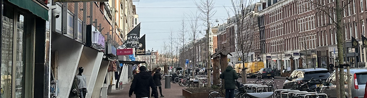
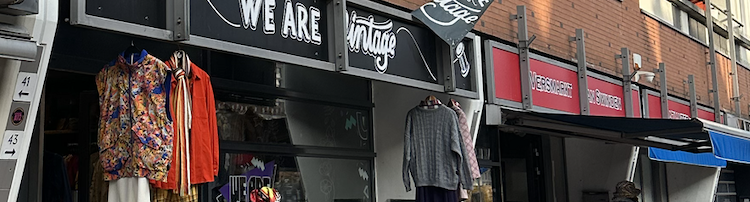
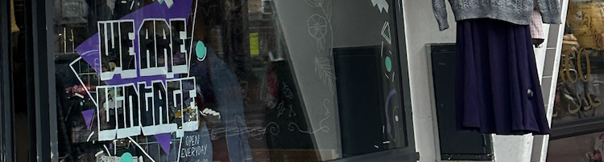
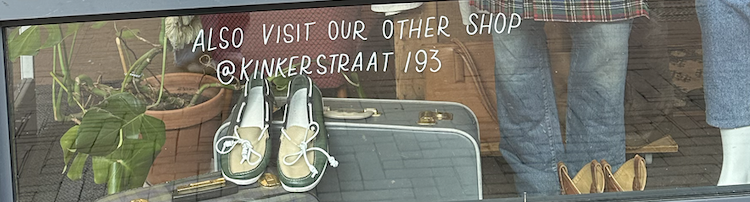
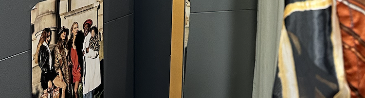

Vintage Fashion Night
Datum: 25 Maart 2024
Een exclusieve avond waarin de tijdloze elegantie van vintage mode centraal staat. Verwacht een modeshow, styling workshops en een kans om unieke vintage stukken te ontdekken. Perfect voor fashionista's en vintage liefhebbers.
Retro Muziek & Markt
Datum: 15 April 2024
Combineer het genot van nostalgische muziek met een unieke shopping ervaring. Blader door onze uitgebreide collectie vintage kleding terwijl je luistert naar de beste retro hits. Eten, drinken en entertainment zijn volop aanwezig.
Workshop Vintage Styling
Datum: 5 Mei 2024
Leer hoe je vintage items kunt integreren in je moderne garderobe met onze styling experts. Deze workshop is ideaal voor iedereen die zijn persoonlijke stijl wil verrijken met unieke vintage vondsten.
Decennia Disco Avond
Datum: 20 Juni 2024
Reis terug in de tijd tijdens onze Decennia Disco Avond. Trek je beste vintage outfit aan en dans op de grootste hits uit de jaren '60, '70 en '80. Een perfecte gelegenheid om je vintage kleding te showen.
Vintage Swap Party
Datum: 30 Juli 2024
Een duurzame manier om je garderobe te vernieuwen. Breng kledingstukken die je niet meer draagt en ruil ze voor iets 'nieuws'. Een geweldige kans om je kledingkast op te frissen en andere vintage liefhebbers te ontmoeten.